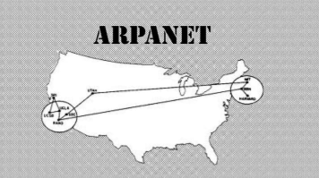

- Em 1969 a guerra fria para conseguir descentralizar a comunicacao EUA criou a arpanet que
seria a rede de comunicacao entre computadores via cabo.
- Em 1990 enquanto trabalhava no CERN Tim Bernes-Lee criou a linguagem de marcação HTML e a WEB
que em sua prosposta utilizaria o protocolo http para comunicação entre cliente e servidor.
- Após a criaçao Tim Bernes patenteou a WEB em uma intituicao sem fins lucrativo chamada W3.
- Após arpanet ser desativada em 1995 a internet foi liberada para uso comercial e privado.
- Web
- World Wide Web: Sistema de documentos interligados acessados pela internet.
- HTTP
- Hypertext Transfer Protocol: Protocolo usado para transferir páginas web.
- HTTPS
- Hypertext Transfer Protocol Secure: Versão segura do HTTP, usando criptografia.
- CERN
- Conseil Européen pour la Recherche Nucléaire (Centro Europeu para Pesquisa Nuclear): Instituição onde a World
Wide Web foi criada.
- TCP
- Transmission Control Protocol: Protocolo que garante a transmissão confiável de dados na rede.
- IP
- Internet Protocol: Protocolo que identifica e localiza dispositivos na rede.
- 1969 - Criação da arpanet, a primeira rede de computadores, financiada pelo Departamento de Defesa dos EUA.
- 1973 - Desenvolvimento do protocolo TCP/IP por Vint Cerf e Bob Kahn, que padronizou a comunicação entre
redes.
- 1983 - Arpanet adota oficialmente o protocolo TCP/IP, formando a base para a Internet moderna.
- 1989 - Tim Berners-Lee propõe a World Wide Web (WWW) enquanto trabalha no CERN.
- 1991 - Lançamento do primeiro site web, tornando a web acessível ao público.
Principais Eventos
| Ano |
Evento |
Descrição |
| 1969 |
Criação da ARPANET |
Primeira rede de computadores. |
| 1973 |
Protocolo TCP/IP |
Padronização da comunicação entre redes. |
| 1983 |
Adoção do TCP/IP |
TCP/IP se torna padrão da arpanet. |
| 1989 |
Proposta da World Wide Web |
Tim Berners-Lee propõe a web. |
| 1991 |
Primeiro site web |
Web torna-se acessível ao público. |
Link Instituição Tim Berner Lee
Primeiro Site Internet

Implementação arpanet
Tim Berners-Lee - Criador WEB